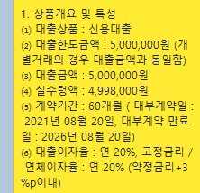
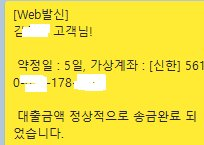

[개인회생자대출] 김용혁 사장님 감사합니다 ^^
지난 수요일부터 많이 애써주시고 감사했습니다~
회생 신청후 인가나고 채권사 1곳에서 채불등록되있는거 해제를 안해줘서... 오늘
채불등록 해제된거 확인하고 신청해서 승인까지 되었네요~
저는 기존에 대출받은것들이 전부 36개월이라 월 상환액이 부담되는 상황이였습니다..
오케이 500
골든 500
유미 500
이렇게 였는데 매달 20만원씩 60만원... 이걸 모두 대환해서 60개월동안 상환하려는게 대출신청의
목적이였고, 오늘 금리도 20%로 낮아져서 이자도 덜 나가네요 ㅎㅎ
총 대출실행금액은 1200만원이고 에이원800, 엠에스아이500 이렇게 받았습니다~
3곳 남은 대출금 1000만원 모두상환하고, 회상2회차 밀린거 상환하고 남은돈은 가지고 있어봐야
쓸꺼같아서 상환하려고 합니다 ㅎㅎ
한달에 나가는돈이 60에서 30만원으로 확 줄어드네요 ㅜㅜ 총이자는 좀더 내긴하지만..
김용혁 사장님 고생 많으셨습니다.

